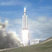

<!-- FALCON 9 -->
	<div class="falcon9-heavy-content">
		<div class="intro-container">
			<div class="intro-top">
				<div class="intro-title">
					<h1>FALCON HEAVY</h1>
				</div>

				<div class="intro-photos">
					
					<div class="nav-1">
						
						<br>
						<span>Photo</span>
						<br> Gallery
						<br>
						<a href="#">SEE ALL <span>→</span></a>
					</div>
					<div class="nav-2">
						FALCON HEAVY <a href="#">PRICING <span>→</span></a>
					</div>
					<div class="nav-3">
						<a href="#">SPACEX LAUNCH MANIFEST <span>→</span></a>
					</div>
				</div>
			</div>

			<div class="info-container">
				<div class="span4">
					<p id="span-left">When Falcon Heavy lifts off later this year, it will be the most powerful operational rocket in the world by a factor of two. With the ability to lift into orbit over 54 metric tons (119,000 lb)--a mass equivalent to a 737 jetliner loaded with passengers, crew, luggage and fuel--Falcon Heavy can lift more than twice the payload of the next closest operational vehicle, the Delta IV Heavy, at one-third the cost. Falcon Heavy draws upon the proven heritage and</p>
				</div>
				<div class="span4">
					<p id="span-right">reliability of Falcon 9. Its first stage is composed of three Falcon 9 nine-engine cores whose 27 Merlin engines together generate more than 5 million pounds of thrust at liftoff, equal to approximately eighteen 747 aircraft. Only the Saturn V moon rocket, last flown in 1973, delivered more payload to orbit. Falcon Heavy was designed from the outset to carry humans into space and restores the possibility of flying missions with crew to the Moon or Mars.</p>
				</div>
			</div>
		</div>
	</div>
